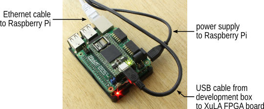
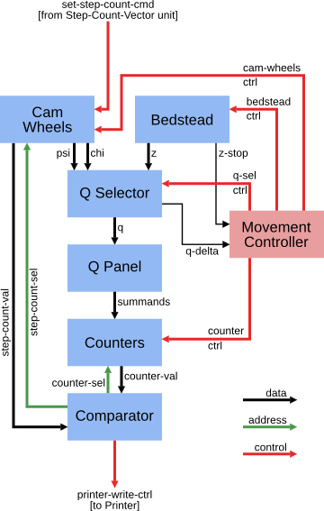
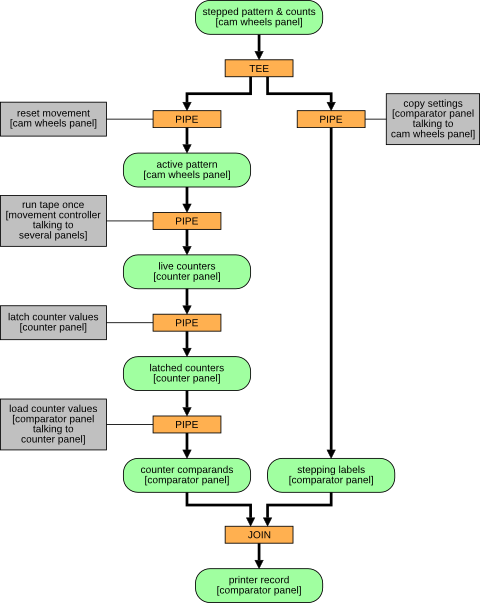
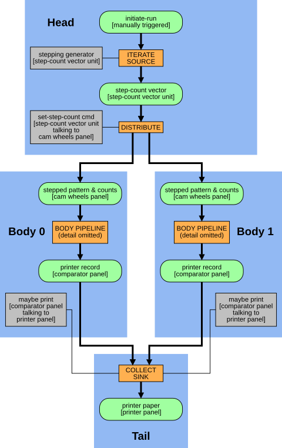

(Some of) Colossus in an FPGA
Ben North, May 2016
1 Background
1.1 Colossus
As described well elsewhere, for example in the Wikipedia article, Colossus was a special-purpose computer, built by Tommy Flowers at Bletchley Park around 1944, as part of the war-time work to break the encryption of intercepted German transmissions. It's a very important, very early milestone in the history of electronic computing.
Colossus counted the number of times some chosen condition was true for the letters of the intercepted message, usually after combining the letters with an electronically-synthesised stream of cipher-key material. An unusually high or low count was, broadly speaking, an indication that one piece of the code-breaking process had been successful.
A previous post described in more detail a typical task for which Colossus was used, and gave a worked example in Python.
1.2 FPGAs
A Field Programmable Gate Array is often described as 'programmable hardware', in that it is a chip consisting of a large connected array of small but flexible logic components, which can be configured to perform the desired task. The configuration is done in a high-level language such as VHDL. FPGAs typically also contain a sprinkling of special-purpose elements such as clock circuitry, RAM, arithmetic, I/O, etc. An FPGA is a 'half-way house' between a general purpose CPU, which is easy to program but slow at run-time for some tasks, and a fully custom chip, which can be extremely quick at run-time but whose design is difficult and time-consuming. I've been curious about FPGAs for a while and looking for an excuse to learn the basics about them.
1.3 Project goal
The goal for this project was to implement enough of Colossus on an FPGA to be able to replicate the 'Chi wheel setting' Python output from the previous post. I expected this to be a good-sized project for learning: achievable but not trivial.
2 Device selection: Raspberry Pi / XuLA
There are many low-cost FPGA experimentation boards around; Joel Williams provides a good survey.
For this project, I chose a nice-looking board: XESS's XuLA2 with a Stickit Raspberry Pi 'connector' board. The design and board-specific tools are fully open, the tools run on GNU/Linux, there is some great introductory documentation, and the designer was responsive in my pre-sale email enquiries.
The resulting hardware stack (literally), from the bottom board up, is:
- a Raspberry Pi (connected to the outside world via Ethernet)
- a Stickit board plugged into the RPi's expansion headers (powered from the RPi)
- a XuLA2 board plugged into the Stickit board (with USB connection from development PC for power and configuration)

The black square chip on the top board is the actual FPGA, a Xilinx Spartan-6 XC6SLX25 device. This is fairly modest compared to the top-of-the-range devices, but I hoped it would be big enough for this project. The FPGA communicates with the RPi over the RPi's GPIO pins and some assigned IO pins on the XuLA.
3 Scope
The full Colossus had many features which were not central to this project, so I established what was needed for wheel-setting and declared that to be the scope of the project:
- Bedstead and punched tape (storage for intercepted message or related data).
- Cam wheels (the sample task is to just set Chis, but the Psi and Mu wheels are implemented too).
- Stepping control ('stepping' is the process of changing to the next candidate wheel setting).
- Q panel (selector; predicate configuration including 'top' and 'bottom' rows and negates).
- Counters.
- Comparator.
- Printer.
3.1 Differences compared to real Colossus
The features on the above list will give the core Colossus functionality, but the design will lack several features of the real thing. For example, I have not implemented the 'multiple test' (aka 'remembering') facility; I do not handle 'limitations' or 'spanning'; there is no palette of 'triggers' for the wheel patterns; there is no patch panel; and no doubt there are other differences. But this feature set does implement enough of Colossus to replicate the wheel-setting task.
The input and output components of Colossus necessarily have a different embodiment in the FPGA:
3.1.1 Bedstead and tape
In the real Colossus, the intercepted message (or some transformation of it) was punched onto a loop of paper tape, which was threaded through a system of pulleys in a large component of the machine referred to as the 'bedstead'. The tape loop then ran continuously as Colossus did its work. The FPGA implementation replaces this with a block RAM.
The real Colossus generated the system clock from the sprocket holes on the every-running paper tape loop. We have an explicit clock which drives all components (including the tape).
3.1.2 Printer
The real Colossus was connected to a teleprinter which printed results onto paper. The FPGA emulates this by spooling output to a block RAM, which can then be read by the RPi.
4 Design
Some details are omitted here; for more, see comments in the source.
I tried to mirror the design of the real Colossus, by implementing the same functional blocks, described in the 'General Report on Tunny with Emphasis on Statistical Methods (1945)', ('GRT' in the below) connected in what I imagined to be a reasonable fashion:

A pair of candidate settings of Chi(3) and Chi(4) is fed in the top
(set-step-count-cmd), and the simulated Cam Wheels are stepped to
those settings. The 'tape loop' (stored message) is run through the
Bedstead, and as each letter on the tape is read, the cam wheels move.
We get a stream of 'Z' (tape letter) and 'Chi', and use the Q Selector
to compute 'Q = delta Z + delta Chi'. The Q Panel tests the predicate
'q(3)+q(4)==0', giving 1 for true and 0 for false, and passes the
resulting summands on to the Counters, which count the number of times
the predicate is satisfied. Once the full tape has been processed, the
Comparator compares the final counter value to a threshold; if the
count indicates that the setting is 'promising', the Comparator sends
commands over the printer-write-ctrl bus to print a record consisting
of the wheel settings and the 'q(3)+q(4)==0' count.
The various components involved in computing one count need to be carefully synchronised; this is the job of the Movement Controller.
4.1 Data-flow control
One interesting aspect of the real Colossus was the feature whereby the counts resulting from one run of the tape are latched in relays for printing so the next loop of the tape can do useful work [53G(c)]. This makes sense in the context of the whole machine being clocked from the tape, and the fact that the tape ran continuously.
I was keen to capture some of the essence of this, and perhaps even extend it: every processing stage should be working whenever it can. The approach I took was vaguely motivated by a quick read-through of the book Communicating Sequential Processes (freely available online), but not in any sense formally.
Consider the different pieces of state as 'slots' which can hold data. A worker in some component processes the contents of one slot, placing the result in another slot. The collection of workers is controlled by a set of 'schedulers', which make sure there are no conflicts over which process is working with which slot.
From this perspective, the processing required to start with a work-unit (a pair of candidate settings of the Chi(3) and Chi(4) wheels) and produce the corresponding result (printer record consisting of stepping counts and the number of times that 'q(3)+q(4)==0') is shown below. In the diagram,
- Data-slots are green rounded rectangles
- Workers are grey rectangles
- Schedulers are orange rectangles.

The left branch does the bulk of the work: the actual tape run and counting. The right branch just copies the settings in case the count turns out to be promising and we need to print the resulting record.
Note that data which are constant over a particular long run (for example, the tape contents and the starting wheel patterns) do not feature in the data-flow diagram.
This gives us a very different view of the system to the previous diagram, although most of the same components are represented. This view concentrates on the logical flow between data-slots, rather than the control signals which achieve a particular worker's task. One logical worker can trigger activity in more than one physical component (in particular the 'run tape once' worker).
4.1.1 Slot behaviour
The data-flow protocol is as follows. Each data-slot has a 'producer' worker and a 'consumer' worker, and has four distinct states. A slot can be:
- owned by the producer, which has not yet completely performed its task (in fact the producer might not even have started work);
- owned by the producer, which has finished its task (the slot therefore contains the result of the computation);
- in the process of having ownership transferred to the consumer; or
- owned by the consumer, which can mutate the contents of the slot if required,
and cycles through these four states in that order.
In general, then, one worker is the 'owner' of two slots at once. For example, the run-tape-once worker mutates the 'active pattern' slot to move the cam-wheels as each letter is processed, and also mutates the 'live counters' slot to count the occurrences of, in our case, 'q(3)+q(4)==0'. The 'tee'd "stepped patterns with counts" data-slot is 'owned', and so potentially mutated, by both of its consumers, which seems to be asking for trouble. However, it is in fact not mutated by either consumer so we get away with it.
4.1.2 Scheduler behaviour
As noted, the orange 'scheduler' boxes coordinate the workers which transform data from one slot to the next. The behaviour of the simple 'Pipe' scheduler in controlling a worker is to cycle through the following steps.
- Wait for input slot to contain data.
- Take ownership of input slot.
- Wait for output slot to be given to us.
- Instruct our worker to consume input and produce output; wait for worker to complete.
- Release input slot.
- Notify downstream scheduler that our output (i.e., its input) is available.
- Wait for downstream scheduler to take ownership of our output slot.
The 'tee' and 'join' schedulers are slightly more complex but follow the same principals.
4.2 Feeding work-units and collecting results
There is also a component whose job is to feed work-units in at the top, and another one whose job is to collect the 'printer records' from the bottom.
4.3 Double-body Colossus
An advantage of FPGAs, for suitable problems, is the ability to do lots of things in parallel. A 'long run' is a good candidate for this, requiring 754 runs through the tape in the case of our Chi(3)/Chi(4) run, with no communication required between these computations.
The design therefore consists of multiple 'body' components, with a 'head' at the top to distribute work units to the bodies, and a 'tail' at the bottom to collate the results from the bodies. It turned out that the design was using c.2/3 of the resources on my XuLA board with two bodies, so the parallelism was limited, but the principle was shown to be sound.
The overall data-flow, combining a head, two bodies, and a tail, is thus as follows. The orange 'body pipeline' box below stands for the above figure.

The 'initiate-run' slot is a dummy; a commmand from the RPi (see below) sets this to 'available' to set the whole run off.
The 'iterate/source' scheduler repeatedly asks the 'stepping generator' worker for the 'next' value, and has a protocol for detecting when the iteration is done. The 'distribute' and 'collect/sink' schedulers choose among a collection (here just two) of potential consumers or producers, which is done by polling. These schedulers have 'indexed' workers, to control which consumer or producer from the collection is to act.
5 Configuration and control
The next question is how to control all this from the RPi.
This aspect of the design is based around an 8-bit address space of commands, some taking an 8-bit data value. Different components respond to different commands. Each command returns an 8-bit value, and there is also an extra response bit to signify success or failure, as some return values are naturally 8-bit.
This whole bus (of command/data/control from RPi to FPGA, and response/control from FPGA to RPi) sprawls everywhere round the design, which I was uneasy about but it worked. Every component reads from the 'command' parts of the bus. The responses from each component are OR-reduced to give the response read by the RPi.
Some commands are configuration commands, and set various values within the system. For example, tape contents, wheel patterns, Q calculation, predicates on Q, and stepping and print-threshold settings. Other commands trigger operations. For example, the workers are normally under the control of the schedulers, but each worker can also be individually triggered from the RPi for testing purposes.
The main 'go' command works by forcing the 'initiate-run' pseudo-data-slot to appear available, and from that moment the schedulers take over to perform the run.
A multiplexor determines which commands are intended for the head or tail, and which for the bodies. For configuration commands targetting the bodies, the same commands are fed to all bodies. A component checks that the responses are identical and returns an error code if not.
5.1 Physical interface
To reduce demand for physical pins, the 'command' and 'data' buses are multiplexed onto one 8-bit bus, with a separate bit to indicate whether the RPi is currently presenting a command or data value. The physical connection between the RPi and the XuLA board is thus over two 8-bit 'ports' with a few extra control lines. An alternative (perhaps better in retrospect) would have been to use some kind of serial port.
6 Testing
GRT contains this passage on testing:
The early difficulties were sufficiently severe to prevent more than three messages from being set in any week in the first three months of operation. They arose partly from machine faults (incorrect tapes from Tunny and incorrect counts on Robinson), partly from operator's error. The standard of accuracy needed before there was any possibility of success was very much higher than would ordinarily be required of this kind of apparatus, or of operators. A single letter omitted in a tape destroyed the value of the run and the ordinary length of a tape was about 3000 letters. A count missed at the beginning of a run of Robinson gave wheel settings bearing no simple relations to the true ones. In addition there were numerous opportunities for wrong plugging, switching, and tape-setting on both machines. An error which passed undetected through several stages of the work could take hours or even days to track down.
To remedy this state of affairs a system of checks was gradually evolved which made it a rare occurrence for a mistake to persist through several operations. To achieve this very elaborate checks were necessary, and about half the operational time was occupied in carrying them out. It was made a principal that the design of a new routine must include all the checks required, and in estimating the merits of a proposed routine the nature of the checks required had always to be taken into account. It is for this reason that checks are described so fully in the chapters that follow.
[p.40, S.15B(b)]
I find it interesting that the importance of 'design for testability' — It was made a principal that the design of a new routine must include all the checks required — was recognised as computers were being invented, certainly before 'software engineering' was a discipline. I tried to take this to heart, and every component can be individually unit-tested in an automated fashion. Often this added a considerable amount of logic, but the ease of unit testing made it worthwhile.
6.1 Unit testing in Python
It took some effort to set up, but the approach I took was to build a
framework which allowed the unit testing to be done in Python. This
effort paid off, and it was productive to be able to write and drive
tests from the flexible and familiar pytest environment. The
simulated design has a simple 'command line' (REPL) implemented in VHDL,
and then Python code which talks to the REPL over a Unix named pipe
(FIFO).
As well as the benefits of the pytest framework, I could capture a
spool of commands sent to the REPL, and replay them to the GUI
logic-analyzer / simulator, to track down bugs.
Finally, the real benefit came when the time came to actually synthesise the design to the real FPGA. I wrote a small piece of C++ code which behaved like the simulation REPL, but which truly drove the RPi's GPIO pins and read the FPGA's response from other GPIO pins. Then, by making the Python unit test code talk to this client rather than the simulation, I could use the self-same unit tests against the real FPGA. Furthermore, the same system could be used to perform the actual 'long run' task, and in fact the first 'long run' was done on the actual FPGA (not in simulation), and it behaved correctly first time.
7 Results: System behaviour
By running a simulation of a 41-cam short run and extracting the timings of the various signal transitions inside the schedulers, I put together the following animation of the system in operation. Click on the 'manual trigger' at the top to see the flow of the 41 work units through the twin-body Colossus:
The colours (which cycle through a small palette) represent different work units — candidate settings for the Chi(1) wheel — working their way through the twin-bodied system and getting printed out on the paper.
The correct working of the various schedulers and workers, with every process working whenever its input is available and its output-slot is free, was a satisfying outcome.
8 Results: Output of Chi-setting run
We can configure the VHDL Colossus for the Dickens-based 'q(3)+q(4)==0'
run of the previous
post. To that worked example, we add some code to store the
'intercepted encrypted message' as a Python pickle, so we can use it for
this experiment too. Preparing for the run involves loading the tape
contents, setting the Q expression, setting the predicate and the
destination counter, and specifying the threshold for printing. Then
the RPi can trigger the run, and finally dump the 'printer' RAM,
interpreted as records. The Python code to do this is in the file
tests/sample_long_run.py, which implements a unit test to compare the
FPGA's output to the expected output as calculated in Python. That
module can also be invoked from the command-line to produce this output:
Chi(3) Chi(4) Count of
stepping stepping (3)+(4)=dot
12 0 7856
7 1 7834
0 3 7843
17 4 7855
0 8 7853
5 8 7644
10 8 7529
15 8 7775
11 9 7825
16 9 7858
2 11 7852
24 11 7868
16 13 7856
28 13 7785
14 15 7854
22 15 7866
16 16 7845
18 17 7869
20 17 7857
23 17 7813
5 19 7754
10 19 7725
15 19 7833
11 20 7806
5 23 7851
10 23 7836
15 23 7832
2 24 7848
26 24 7868
These are identical results to those given by the Python code in the previous post. This was very satisfying.
9 General remarks
9.1 Reset
Various pieces of state in the system have a start-up value determined by an initialization clause in their VHDL definition. The alternative is to have dedicated 'reset' functionality throughout. From a brief bit of reading, it seems that in fact the 'reset' approach is recommended: relying on initialization for signals is sometimes tool- or part-specific which means it's difficult to port the design to, say, ASIC technology. From my direct experience, it made unit testing more fiddly because the FPGA Colossus carried state from one unit test to the next, which meant each test had to ensure all state it relied on was set correctly.
9.2 Choice of how to compute delta-de-Chi
There is more than one way to set Colossus up to count 'q(3)+q(4)==0' on delta-de-Chi:
- Z, the intercepted encrypted message, can be punched 'as is' onto the tape. Likewise, the known Chi patterns can be used 'as is' to configure the Chi patterns within Colossus. Then the Q selector is configured to calculate 'Q = delta-Z + delta-Chi'. This is the approach taken in the above work.
- Delta-Z can be pre-computed and punched onto the tape. What Colossus thinks of as 'Z' is therefore truly 'delta-Z'. Likewise, we can compute the (cyclic) delta of the true known Chi-wheel patterns, and configure these as the Chi patterns within Colossus. What Colossus thinks of as 'Chi' is therefore truly 'delta-Chi', and we configure 'Q = Z + Chi'.
- Or indeed a mixture of the above.
Note that existence of any 'delta' operation in the Q-Selector means
that first letter is not counted. GRT describes a test which should
give a count equal to the tape length; then says 'It is better to count
/s in delta-Z + delta-Chi which checks Colossus delta-ing
simultaneously; this of course reduces the score by 1' [23K(c),
emphasis added]. This is why a q_delta signal is sent from the
Q-Selector to the Movement Controller.
9.3 Use as decrypting machine
Suppose we have fully broken the key for a message, and so know the Chi, Psi, and Mu wheels' patterns and settings. By specifying 'Q = Z + Chi + Psi', we can recover the plain text of an encrypted message by snooping the 'Q' bus after each movement. This is one of the unit tests. Note that the real Colossus had no such 'snoop' facility, and Bletchley Park instead had separate machines for decryption.
9.4 Experiment with both wheels stepping fast
The following observation on 'long runs' occurred to me; I don't know whether it is new or common knowledge:
All wheels have pairwise co-prime lengths, and therefore it should be the case that configuring 'fast' stepping for the two wheels involved in the 'long run' still explores all the possibilities, but prints the results in a different order.
The specimen runs given in GRT [section 23D, 'Annotated Exhibits', starting p.84] make use of the 'multiple testing' facility of the real Colossus, and so necessarily have one wheel stepping 'fast' and one 'slow'.
I added a unit test which configures the FPGA Colossus to perform the 'step both fast' long run, and so confirmed the predicted behaviour.
10 Source code
The VHDL and Python code, and related files, are available at:
The source code is licensed under the GNU General Public License v3 (or later).
My real repo history (>1,000 commits) includes some files generated by
the Xilinx tools, and I'm not sure of their copyright / licensing
status, so the repo on Github is an expurgated version. The affected
directory (src/generated) has a README file describing what
components need to be generated and with what settings.
11 Conclusions and future work
While only scratching the surface of the world of FPGA design, I found that completing this project was a worthwhile experience. At many stages, it required a different way of thinking to the software world.
I found that the actual logic of Colossus, in terms of computing Q, testing predicates, and counting how often they were true, was a very small part of the overall project. Testability and configuration made up a large part, as did the data-slot and worker-process scheduling.
In terms of workflow, the 'edit, compile, test' cycle was not too bad for simulation. However, turning the VHDL into a bitstream ready for loading into the FPGA was a many-minutes job. Apparently a real FPGA project can take hours to 'compile' into hardware in this way. I imagine these long feedback loops have a big effect on what counts as an effective workflow.
In some ways, turning an algorithm defined in pseudo-code into a finite state machine was quite like compiling that algorithm into a set of 'basic blocks' connected in a control flow graph. Within each 'basic block', I sometimes used a 'program counter' to achieve sequential execution within a state. I do not know whether this is a standard technique.
Given infinite time, there are various directions in which the project could be extended:
11.1 Explore alternative parallelisation approaches
The duplication of the entire 'body' in this design is not the only way in which multiple Colossus instances could have been achieved. For instance, a single bedstead could have been used, feeding the Z stream to the multiple bodies. This would avoid needing one BRAM per body instance, at the cost of requiring extra synchronisation against the Z stream. It would perhaps even return to the original Colossus design of a continually-running tape.
Of course, the real Colossus's 'remembering' circuits achieved a speed-up by a factor of five.
11.2 Improve the clock speed
The design currently takes the modest 12MHz clock on the XuLA board directly as the system clock. I did make a brief attempt at using the clock multiplier primitives — the resulting design seemed to meet timing, and passed all unit tests in simulation. However, it didn't work on the real FPGA. One thought is that it takes some time for the multiplied clock to become stable, and my laziness at not implementing proper 'reset' functionality was coming back to haunt me. Or perhaps the higher clock speed required more current than could be drawn over USB.
11.3 Implement the rest of Colossus
This would be a big job, and might involve more research, as the information in GRT is not completely explicit on every point.
11.4 Compare to the real Colossus implementation
It would be interesting to read "A technical description of COLOSSUS I" (D. C. Horwood, August 1973) as held in the UK's National Archive, and see how the original designers approached some of the implementation problems.
Ben North, May 2016
[JavaScript licence information]
This web-page content Copyright 2016 Ben North; licensed under CC BY-SA 4.0